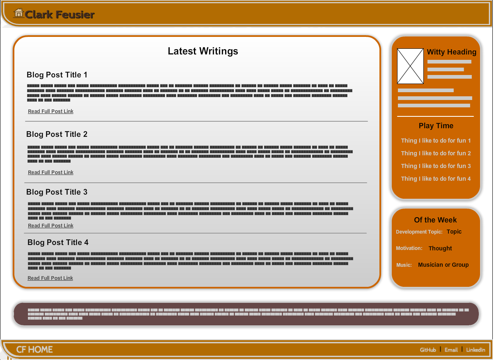

Wireframing and Designing This Website
This week and this post is all about making this website "mine" -- particularly from a design perspective. This will involve coming up with a rough plan and wireframe to shoot for, and then implementing that model in HTML and CSS. Because I am finishing this post after implementing the design, I can provide some better insight on my choices and the process than if I had written this completely before redesigning my site. This site should continually evolve, but for now, I am relatively pleased with the result because it feels like my personality. So, here is the wireframe that acts as the target of the design:

Doesn't look too hard, right? Well, it was. The CSS in my media queries to get the site to look good on different devices took quite a bit of tinkering. The plan that I followed to execute this was as follows:
First, start with the header and footer. Add an image icon and link that to your homepage. Then, add some borders and colors. Finally, tweak the border-radius on the bottom-left.
Next, add borders and colors to the main content area and the two sidebar containers. Add some border-radius to all of them on all sides. Repeat this for the dark full-width container at the bottom near the footer.
That was pretty much all of it, except for chosing typography and writing rules of responsiveness. However, at the end it was too boring, so I chose a background, which I explain below.
The Background Choice...
A large part of this decision was my general nerd-like love of code. I am not referring to coding right now -- I am talking about how I love the look of code. Having come from a background in mathematics, physics, formal logic and the likes, I seem to have grown a strong aesthetic attachment to the syntaxes of artificial languages. There is something beautiful, complex yet elegant, powerful, and mystical about artificial languages -- I can't help but feel that when looking at code.
So, I found some very standard and pretty Javascript to turn sideways and use as an translucent overlay that functions as a background. The trick at that point was making sure that it was opaque enough to see the code, but translucent enough that the typography on top of it was easily readable.
That was it. The funny thing is that after finishing this post, I am already ready to change the design! That will be left for another week :)

Makin' Stacks, Yo... Full-Stacks
I am a student at Dev Bootcamp in San Francisco, California. Born and raised in the San Francisco Bay Area. Educated at California Polytechnic State University, San Luis Obispo (physics and philosophy). Graduate education at the University of Chicago (metalogic and philosophy of science).
My partner in crime is named Fiddle -- She likes chasing lizards -- Her best friend (other than me) is named Banjo -- Say Hi!